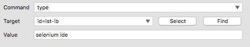
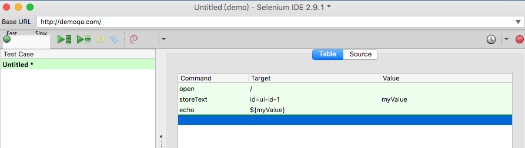

Selenium IDE
安裝 Selenium IDE：Selenium IDE :: Firefox 附加元件
錄製一個測試案例
操作 Selenium IDE 就像錄影機，在開始「錄製」後，在瀏覽器操作網站的動作就會被捕捉，產生測試案例（Test Case）的內容。錄製完成後，可以用「播放」重新把網站操作過程重播一次。
這是使用 Selenium 進行網站自動化的基礎，以 Google 搜尋為例，建立一組測試案例包含：
- 前往 https://www.google.com.tw 網址
- 在文字輸入框輸入
selenium ide - 然後按下Google 搜尋按鈕
- 取得搜尋結果，檢查結果是否包含預期的內容
HTML 原始碼
<input class="gsfi" id="lst-ib" maxlength="2048" name="q" autocomplete="off" title="搜尋" value="" aria-label="搜尋" aria-haspopup="false" role="combobox" aria-autocomplete="both" dir="ltr" spellcheck="false" type="text">
<input value="Google 搜尋" aria-label="Google 搜尋" name="btnK" jsaction="sf.chk" type="submit">
Selenium 指令
命令組成

- 指令 (Command)：行為 / 事件
- 目標 (Target)：選取元素
- 值 (Value)
指令的種類
- 操作（Actions）
- 存取（Accessors）
- 驗證（Assertions）
操作（Actions）
open：前往某個頁面

| 命令 (Command) | 目標 (Target) | 值 (Value) |
|---|---|---|
| open | /test | |
| open | http://demoqa.com |
click：模擬點擊一下
| 命令 (Command) | 目標 (Target) | 值 (Value) |
|---|---|---|
| click | myCheckbox | |
| clickAndWait | mySubmitButton | |
| clickAndWait | myLike |
type：模擬鍵盤輸入
| 命令 (Command) | 目標 (Target) | 值 (Value) |
|---|---|---|
| type | myField | Hi |
| typeAndWait | myField | Hi |
select：模擬選取
| 命令 (Command) | 目標 (Target) | 值 (Value) |
|---|---|---|
| select | id=entry_1000004 | label=Firefox |
| select | dropDown | index=0 |
| select | dropDown | value=AUD |
| selectAndWait | dropDown | index=0 |
| selectAndWait | dropDown | value=AUD |
pause
- 暫停
- 單位是毫秒
| 命令 (Command) | 目標 (Target) | 值 (Value) |
|---|---|---|
| pause | 5000 |
存取（Accessors）
- storeText
- storeTitle
- store
| 命令 (Command) | 目標 (Target) | 值 (Value) |
|---|---|---|
| store | alincode@gmail.com | myEmail |
| 命令 (Command) | 目標 (Target) | 值 (Value) |
|---|---|---|
| type | id=email | ${myEmail} |

驗證（Assertions）
- 驗證（assert）/ 辨識（verify）
- assertText / verifyText
- assertTitle / verifyTitle
- assertAlert / verifyAlert
- assertTextPresent / verifyTextPresent
- assertElementPresent / verifyElementPresent
- assertTable / verifyTable
- 等待（waitFor）
- waitForText
- waitForPageToLoad
- waitForElementPresent
驗證（assert）vs 辨識（verify）

差別在於處理錯誤的方式
- 驗證（assert）發生錯誤時，測試將會終止。
- 辨識（verify）：發生錯誤時，只是將錯誤訊息留下記錄，測試將會繼續執行不會中斷。
- 使用情境：不影響整體測試流程的小細節
verifyText
- 驗證文字
| 命令 (Command) | 目標 (Target) | 值 (Value) |
|---|---|---|
| verifyText | xpath=/html/body/div[2]/div/p | 驗證的文字 |
| verifyText | //html/body/div[2]/div/p | 驗證的文字 |
verifyAllWindowTitles
- 驗證視窗標題
| 命令 (Command) | 目標 (Target) | 值 (Value) |
|---|---|---|
| verifyAllWindowTitles |
等待（waitFor）
等待某些情況發生時才生效，常用於非同步 (AJAX)。
waitForAllWindowTitle
- 等待視窗指定標題出現
| 命令 (Command) | 目標 (Target) | 值 (Value) |
|---|---|---|
| waitForAllWindowTitle | 您的標題 |